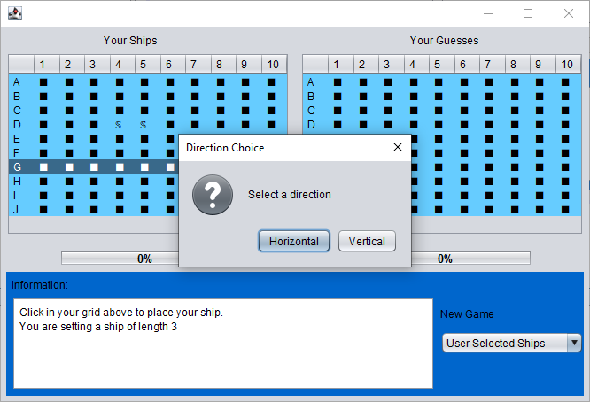
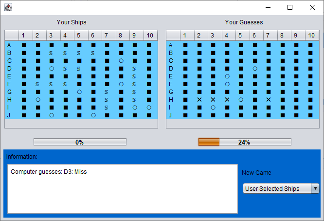
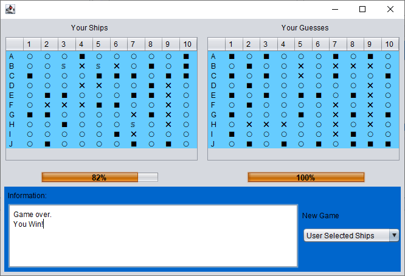
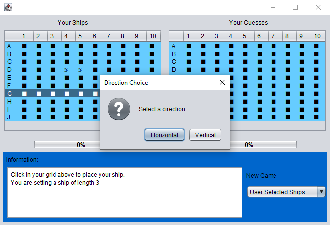
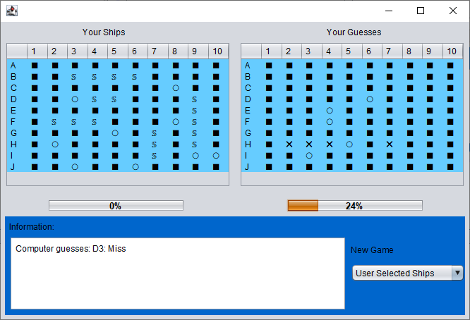
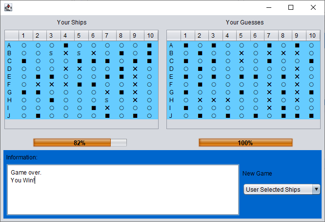

Battleship
Battleship was the first project I ever made from coding. When I had free time in high school, I created this game. With that being said, from there, I knew I wanted to be a programmer. I coded the game in Java with a GUI, to make the game playable without having to type in the console. Coding this game in Java taught me to not only think on my feet, but explore other solutions when something is not quite working right. When this occured, I had to browse through hundreds of lines of code, across 7 different Java files to figure out what the problem was and then code a workaround. Java is not the easiest language to use to make games so having this experience gave me a strong base for any other project I could make.
If you would like to try the game out, please click here to download!
To-Do List
To test my skills in CSS, I decided to style a to-do list I found online. This simple to-do list can keep track of what you need to do as well as being able to set the task as complete. I styled a few things including the buttons, background, and shape of text boxes. Althought the styling is not perfect, it is a project I want to continue working on to make it look exactly how I want it.
Click here to view the to-do list